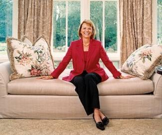
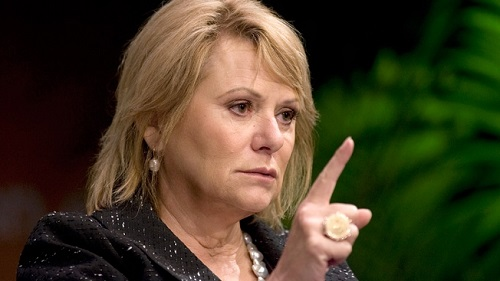

Introducing the Outspoken, Tough-Talking, Techonolgy Leader, Carol Bartz
The Life and Times of Carol Bartz.

Carol Ann Bartz (born August 28, 1948) is an American business executive, the former president and CEO of the internet services company Yahoo!, and former chairman, president, and CEO at architectural and engineering design software company Autodesk.
Early Life and Education
Bartz was born in Winona, Minnesota, the daughter of Shirley Ann (née Giese) and Virgil Julius Bartz. Her mother died when Carol was eight years old. A few years later, she and her younger brother, Jim, moved from Minnesota to the home of their grandmother, Alice, on a dairy farm near Alma, Wisconsin. In high school, Bartz did well in mathematics, and was also homecoming queen. She began college at William Woods University in Fulton, Missouri, and subsequently transferred to the University of Wisconsin–Madison where she received a bachelor's degree in computer science in 1971. While in college, she supported herself as a cocktail waitress.Bartz also has two half brothers and two half sisters all living in Wisconsin and Minnesota.
Bartz was also awarded an Honorary Doctorate of Humane Letters degree (2002) from New Jersey Institute of Technology, an Honorary Doctor of Science degree from Worcester Polytechnic Institute and an honorary Doctor of Letters degree from William Woods University.
Career: Autodesk, Yahoo!
Bartz's Tech Career Snapshot: Table Timeline
3M Company
1972-1976
Digital Equipment Corporation and Sun Microsystems
1980s-1990s
Autodesk
1992-2006
Yahoo!
2009-2011
In 1976, Bartz went to work at the manufacturing conglomerate 3M, but left after her request to transfer to the headquarters was denied. Bartz moved on to the computer industry, including jobs at Digital Equipment Corporation and Sun Microsystems.
Career List
Autodesk
Yahoo!
Coporate Board Memberships
CEO of Autodesk
She became CEO of Autodesk in 1992. According to Forbes, Bartz "transformed Autodesk from an aimless maker of PC software into a leader of computer-aided design software, targeting architects and builders." She is credited with instituting and promoting Autodesk's "3F" or "fail fast-forward" concept – the idea of moulding a company to risk failure in some missions, but to be resilient and move on quickly when failure occurs. She stepped down as CEO in 2006 and became the executive chairman of the board.
Autodesk net revenue substantially increased during her 14-year tenure as the company's CEO, annual revenue rose from $300 million to $1.5 billion, with the stock price rising an average of 20 percent annually.
Bartz served on several boards of directors, including those of Intel, Cisco Systems, Autodesk, BEA Systems, Network Appliance, and the Foundation for the National Medals of Science. Additionally, she has been a member of the United States President's Council of Advisors on Science and Technology.
CEO of Yahoo!
On January 13, 2009, Bartz was named CEO of Yahoo!, the Internet services company which operate the fourth most-visited Web domain name in the world, succeeding co-founder Jerry Yang. During a conference call with financial analysts later in January 2009, she announced her intention to make sure Yahoo! got "some friggin' breathing room" so the company could "kick some butt." Rob Hof of Business Week was skeptical that Bartz or anyone else could save the company: "... it's not yet clear if Bartz can turn Yahoo around no matter how good she may be."
In May 2009, Reuters reported that she had already "worked through an impressive checklist" at her new company, "upending the organizational structure, replacing executives and cutting costs, including 675 jobs, or 5 percent of the workforce." Analysts described her efforts as precisely what the company required, but, as reporter Alexei Oreskovic observed:
For Yahoo's ranks, still shell-shocked from deep cuts in 2008 — including 1,600 axed jobs — the hope that Bartz brings is increasingly mixed with a dose of fear and uncertainty. Yet broad support remains for Bartz despite the tough talk, canceled holiday parties and forced vacations that have come to define her era.

Carol Bartz speaking sternly
With a new round of job layoffs and the removal of a number of Yahoo! sites, "anxiety within the ranks has been exacerbated by what some say is a growing sense of secrecy", for which Bartz has a notable reputation: "The informal flow of information once common within the company has come to a halt." Bartz was also quoted to have said that she would "drop-kick to fucking Mars" employees who leak to the press. Oreskovic quoted a fearful anonymous insider: "We are all sort of wanting to believe in her because we really want to see Yahoo! turned around, but it still doesn't make it any less scary when you don't hear about what's coming up. Everything is on a need-to-know basis."
At her one year mark at Yahoo in January 2010, Bartz gave herself a "B-" grade for the job done in 2009: "It was a little tougher internally than I think I had anticipated. I did move fast, but this is a big job." Others in the media, however, rated her job higher given the challenges she had to manage.
When Bartz was hired by Yahoo in early 2009, she was paid an annual base salary of $1 million. She was eligible for an annual 400% bonus and received 5,000,000 shares in addition to an equity grant of $18 million of stock (to compensate for the forfeiture of the value of equity grants and post-employment medical coverage from her previous employer). In 2010 Bartz was named “most overpaid” CEO by proxy voting firm Glass-Lewis when she received $47.2 million in compensation.
On September 6, 2011, Bartz was removed from her position at Yahoo! (via phone call by Yahoo Chairman Roy Bostock), and CFO Tim Morse was named as Interim CEO of the company. Bartz expressed her desire to remain on the Board of Directors. However, on September 9, 2011, Bartz resigned from the company's Board of Directors.
Corporate board memberships
Ms. Bartz has been a member of eight public company boards in the last 20 years. She is still on the board of Cisco (Since 1996).